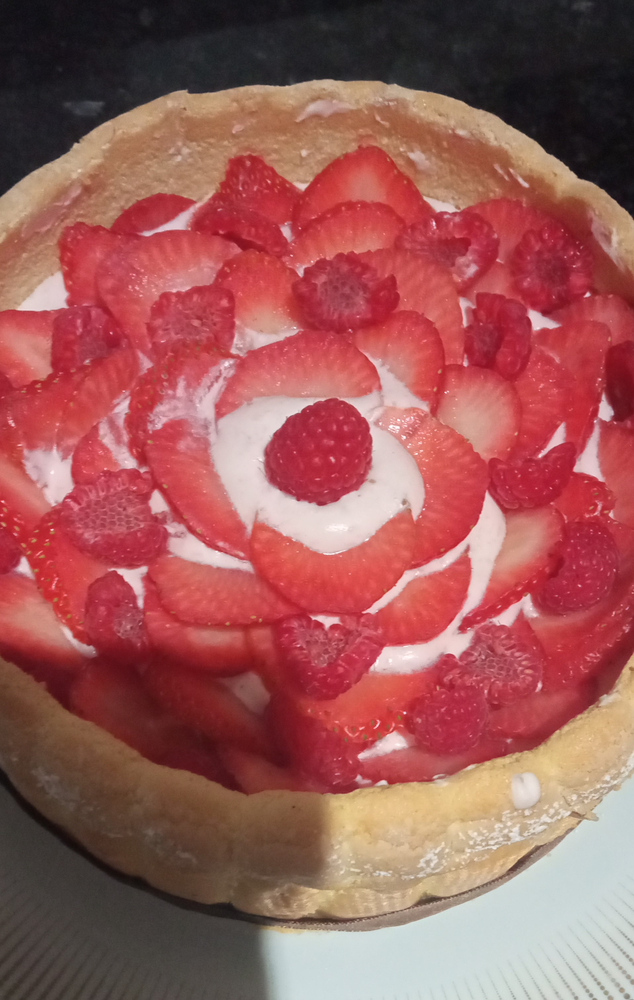

Charlottes aux fraises
| Temps total: ~3h | Temps de préparation: ~1h | Repos/Cuisson: minimum 2h + 10 mins | Quantité: 6-8 parts |
Ingrédients biscuits cuillère:
Préparation biscuits cuillère:
- Préchauffer le four à 200°C.
- Monter les blancs en neige.
- Une fois qu’il deviennent mousseux et que les traits du fouet sont visibles mais qu’ils ne sont pas totalement montés, ajouter le sucre en pluie et augmenter la vitesse du robot pour obtenir une meringue en bec d’oiseau.
- Incorporer les jaunes délicatement à la Maryse.
- Tamiser la farine et l’incorporer délicatement à la Maryse.
- Mettre la préparation dans une poche à douille.
- Pocher tout d’abord un rond de la taille de votre moule pour le fond (vous pouvez en faire plusieurs en fonction de la hauteur de votre moule afin de faire plusieurs étages lors du montage) et des boudoirs en long collés pour le tour de la charlotte (faire une bande assez longue pour tout le tour du moule.).
- Saupoudrer les boudoirs (les bandes et les ronds) de sucre glace (tamisé).
- Enfournez a 200°C pendant 8-10min.
Ingédients mousse à la fraise:
Préparation mousse à la fraise:
- Découper les fraises.
- Mettre la gélatine à ramollir dans de l’eau froide.
- Mixer les fraises en purée.
- Mettre la moitié de la purée dans une casserole à chauffer avec le sucre, conserver l’autre moitié de coté.
- Mélanger jusqu’à ce que le sucre soi dissous.
- Ajoutez la gélatine bien essorée (important) et mélanger le tout (La gélatine va fondre dans la mélange chaud.).
- Ajouter à cette préparation l’autre moitie de purée mise de côté auparavant.
- Mélanger le tout et laissez refroidir.
- Monter la crème liquide en chantilly.
- Ajouter à la chantilly la purée de fruit et mélanger délicatement (avec une Maryse).
Montage
- Commencer par placer un premier cercle de boudoir au fond du moule et une bande autour.
- Pocher de la crème en recouvrant tout le cercle de biscuit.
- Placer quelques fruits frais coupé pour plus de mâche.
- Replacer un cercle de boudoir et répéter les étapes précédentes autant de fois que nécessaire.
- Pour le dessus, couper des fruits et placez les joliment et/ou décorer en pochant la crème.
Astuces:
- Les cercles de boudoirs du milieu doivent être plus petit que celui qui sert de « base ».
- Laisser bien prendre la charlotte au frais avant de la déguster (meilleur le lendemain).
- Les fraises peuvent être remplacées par d’autres fruit (framboises, mangues, etc).
